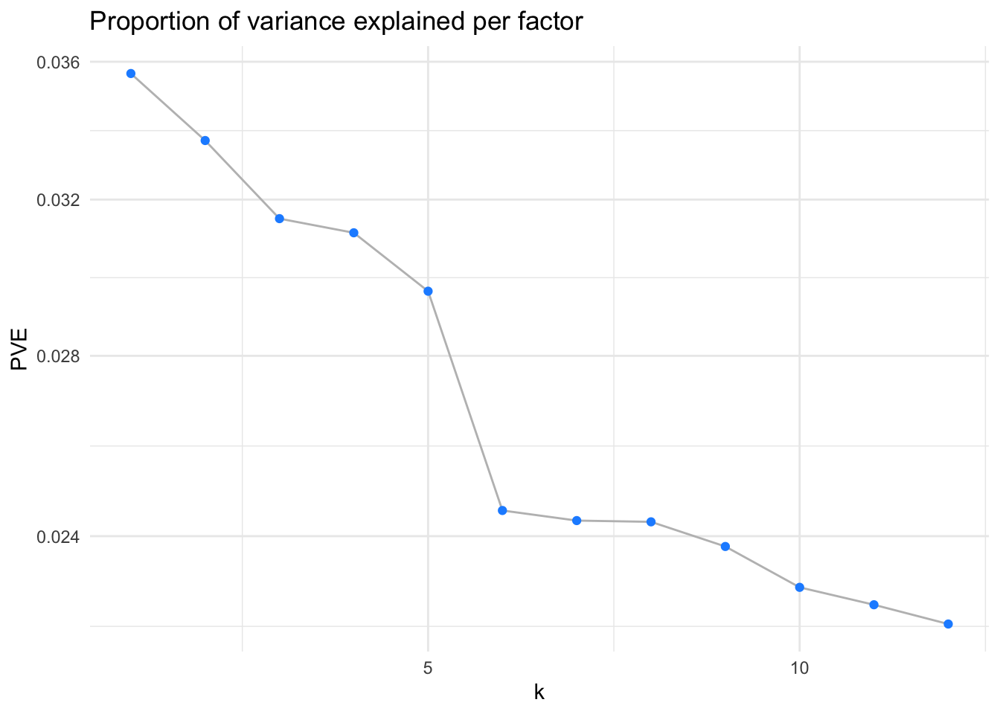
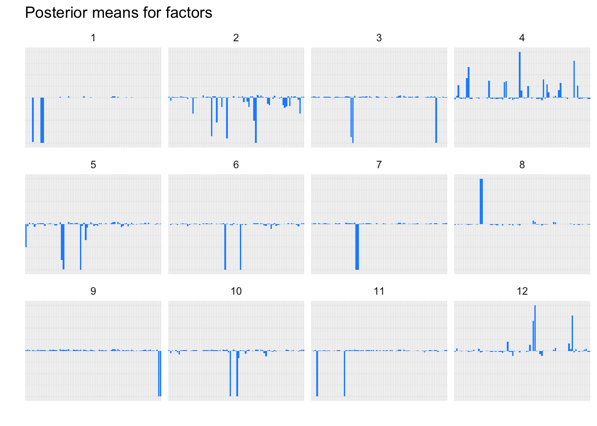
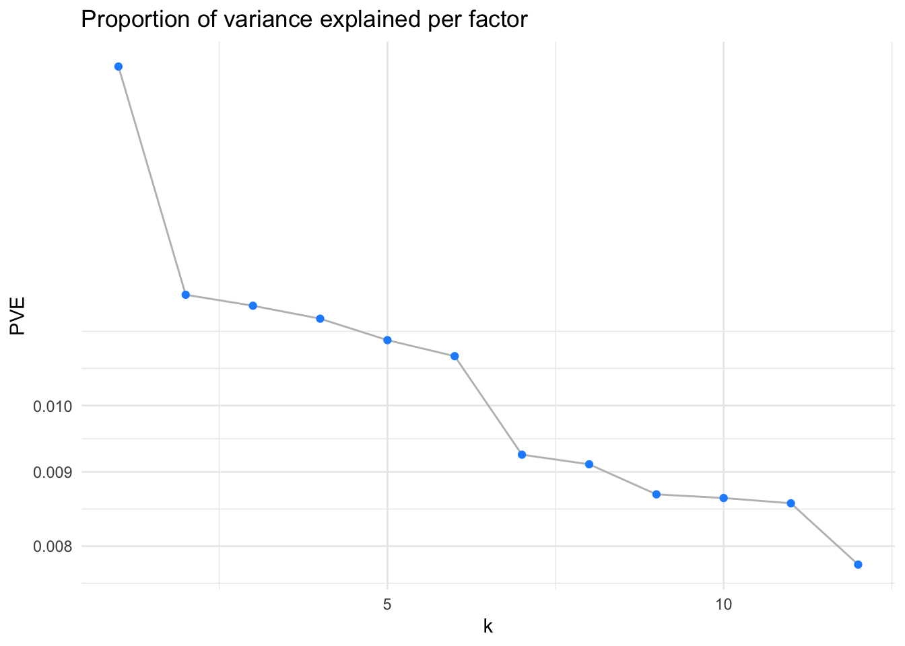
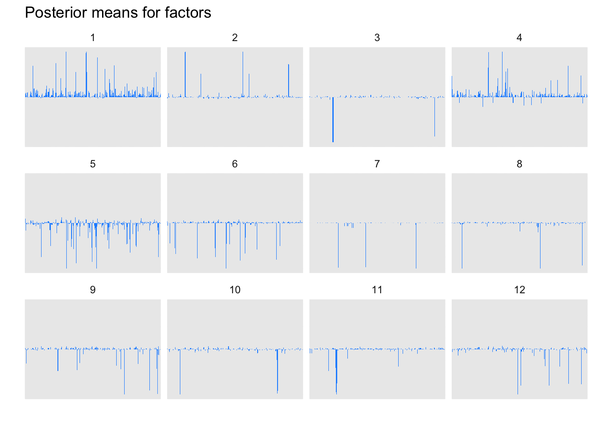

Flashier
2023-11-26
Last updated: 2023-11-29
Checks: 6 1
Knit directory: ~/multistate2/
This reproducible R Markdown analysis was created with workflowr (version 1.7.1). The Checks tab describes the reproducibility checks that were applied when the results were created. The Past versions tab lists the development history.
The R Markdown file has unstaged changes. To know which version of
the R Markdown file created these results, you’ll want to first commit
it to the Git repo. If you’re still working on the analysis, you can
ignore this warning. When you’re finished, you can run
wflow_publish to commit the R Markdown file and build the
HTML.
Great job! The global environment was empty. Objects defined in the global environment can affect the analysis in your R Markdown file in unknown ways. For reproduciblity it’s best to always run the code in an empty environment.
The command set.seed(20230211) was run prior to running
the code in the R Markdown file. Setting a seed ensures that any results
that rely on randomness, e.g. subsampling or permutations, are
reproducible.
Great job! Recording the operating system, R version, and package versions is critical for reproducibility.
Nice! There were no cached chunks for this analysis, so you can be confident that you successfully produced the results during this run.
Great job! Using relative paths to the files within your workflowr project makes it easier to run your code on other machines.
Great! You are using Git for version control. Tracking code development and connecting the code version to the results is critical for reproducibility.
The results in this page were generated with repository version 0aa467f. See the Past versions tab to see a history of the changes made to the R Markdown and HTML files.
Note that you need to be careful to ensure that all relevant files for
the analysis have been committed to Git prior to generating the results
(you can use wflow_publish or
wflow_git_commit). workflowr only checks the R Markdown
file, but you know if there are other scripts or data files that it
depends on. Below is the status of the Git repository when the results
were generated:
Ignored files:
Ignored: .DS_Store
Ignored: .Rproj.user/
Ignored: analysis/.DS_Store
Ignored: code/.DS_Store
Ignored: data/
Ignored: lesliepics/.DS_Store
Ignored: output/
Ignored: plots/.DS_Store
Untracked files:
Untracked: analysis/figure/
Unstaged changes:
Modified: analysis/klashier.Rmd
Note that any generated files, e.g. HTML, png, CSS, etc., are not included in this status report because it is ok for generated content to have uncommitted changes.
These are the previous versions of the repository in which changes were
made to the R Markdown (analysis/klashier.Rmd) and HTML
(docs/klashier.html) files. If you’ve configured a remote
Git repository (see ?wflow_git_remote), click on the
hyperlinks in the table below to view the files as they were in that
past version.
| File | Version | Author | Date | Message |
|---|---|---|---|---|
| Rmd | 0aa467f | Sarah Urbut | 2023-11-29 | Update |
| html | 0aa467f | Sarah Urbut | 2023-11-29 | Update |
| Rmd | 4e30b0c | Sarah Urbut | 2023-11-28 | Update |
| html | 4e30b0c | Sarah Urbut | 2023-11-28 | Update |
Let’s do some flashing!
library(flashier)Loading required package: ebnmLoading required package: magrittrlibrary(data.table)
filepath="~/Library/CloudStorage/Dropbox-Personal/pheno_dir/"
df.phecode.wide=readRDS("~/Library/CloudStorage/Dropbox-Personal/phecode/df.phecode.wide.rds")
#df.phecode.wide[is.na(df.phecode.wide)]=0
dfw=df.phecode.wide[,-c(1:5)]
## First create a sparse matrix of loadings on the non-9 ages
dfw[!is.na(dfw)]=1
dfw[is.na(dfw)]=0
X=as.matrix(dfw)
#install.packages("flashier")
## remove individuals never phenotyped
X=X[which(rowSums(X)>0),]
X=X[,which(colSums(X)>500)]
K=12Including Plots
You can also embed plots, for example:
fit=readRDS(paste0(filepath,"fit_default_all.rds"))
dim(fit$F_pm)[1][1] 931plot(fit, pw_which = "factors")Warning in plot.flash(fit, pw_which = "factors"): Consider setting argument
pm_groups to produce a more readable plot.
| Version | Author | Date |
|---|---|---|
| 0aa467f | Sarah Urbut | 2023-11-29 |
| Version | Author | Date |
|---|---|---|
| 0aa467f | Sarah Urbut | 2023-11-29 |
Less than 40
K=12
dfw=df.phecode.wide[,-c(1:5)]
## First create a sparse matrix of loadings on the non-NA ages
# Assuming your data.table is named your_data_table
age_threshold <- 40 # Replace with your desired age threshold
# Apply the operation to all columns
dfw[, (1:ncol(dfw)) := lapply(.SD, function(x) ifelse(!is.na(x) & x < age_threshold, 1, 0))]
X=as.matrix(dfw)
#install.packages("flashier")
## remove individuals never phenotyped
X=X[which(rowSums(X)>0),]
X=X[,which(colSums(X)>500)]
print(dim(X))
fit_default40 <- flash(as.matrix(scale(X)), greedy_Kmax = K)
plot(fit_default40, pw_which = "factors")
saveRDS(fit_default40,file=paste0(filepath,"fit_default40.rds"))filepath="~/Library/CloudStorage/Dropbox-Personal/pheno_dir/"
fit=readRDS(paste0(filepath,"fit_default40.rds"))
dim(fit$F_pm)[1][1] 80plot(fit, pw_which = "factors")
| Version | Author | Date |
|---|---|---|
| 0aa467f | Sarah Urbut | 2023-11-29 |

| Version | Author | Date |
|---|---|---|
| 0aa467f | Sarah Urbut | 2023-11-29 |
now let’s only look at disease that occur before 50
K=12
dfw=df.phecode.wide[,-c(1:5)]
## First create a sparse matrix of loadings on the non-NA ages
# Assuming your data.table is named your_data_table
age_threshold <- 50 # Replace with your desired age threshold
# Apply the operation to all columns
dfw[, (1:ncol(dfw)) := lapply(.SD, function(x) ifelse(!is.na(x) & x < age_threshold & x >(age_threshold-10), 1, 0))]
X=as.matrix(dfw)
#install.packages("flashier")
## remove individuals never phenotyped
X=X[which(rowSums(X)>0),]
X=X[,which(colSums(X)>500)]
print(dim(X))
fit_default50 <- flash(as.matrix(scale(X)), greedy_Kmax = K)
plot(fit_default50, pw_which = "factors")
saveRDS(fit_default50,file=paste0(filepath,"fit_default50.rds"))fit=readRDS(paste0(filepath,"fit_default50.rds"))
dim(fit$F_pm)[1][1] 305plot(fit, pw_which = "factors")Warning in plot.flash(fit, pw_which = "factors"): Consider setting argument
pm_groups to produce a more readable plot.
| Version | Author | Date |
|---|---|---|
| 0aa467f | Sarah Urbut | 2023-11-29 |

| Version | Author | Date |
|---|---|---|
| 0aa467f | Sarah Urbut | 2023-11-29 |
50-60
dfw=df.phecode.wide[,-c(1:5)]
## First create a sparse matrix of loadings on the non-NA ages
## First create a sparse matrix of loadings on the non-NA ages
# Assuming your data.table is named your_data_table
age_threshold <- 60 # Replace with your desired age threshold
# Apply the operation to all columns
dfw[, (1:ncol(dfw)) := lapply(.SD, function(x) ifelse(!is.na(x) & x < age_threshold & x > (age_threshold-10), 1, 0))]
X=as.matrix(dfw)
#install.packages("flashier")
## remove individuals never phenotyped
X=X[which(rowSums(X)>0),]
X=X[,which(colSums(X)>500)]
print(dim(X))
fit_default60 <- flash(as.matrix(scale(X)), greedy_Kmax = K)
plot(fit_default60, pw_which = "factors")
saveRDS(fit_default60,file=paste0(filepath,"fit_default60.rds"))fit=readRDS(paste0(filepath,"fit_default60.rds"))
dim(fit$F_pm)[1][1] 478plot(fit, pw_which = "factors")Warning in plot.flash(fit, pw_which = "factors"): Consider setting argument
pm_groups to produce a more readable plot.
| Version | Author | Date |
|---|---|---|
| 0aa467f | Sarah Urbut | 2023-11-29 |
| Version | Author | Date |
|---|---|---|
| 0aa467f | Sarah Urbut | 2023-11-29 |
dfw=df.phecode.wide[,-c(1:5)]
## First create a sparse matrix of loadings on the non-NA ages
## First create a sparse matrix of loadings on the non-NA ages
# Assuming your data.table is named your_data_table
age_threshold <- 70 # Replace with your desired age threshold
# Apply the operation to all columns
dfw[, (1:ncol(dfw)) := lapply(.SD, function(x) ifelse(!is.na(x) & x < age_threshold & x > (age_threshold-10), 1, 0))]
X=as.matrix(dfw)
#install.packages("flashier")
## remove individuals never phenotyped
X=X[which(rowSums(X)>0),]
X=X[,which(colSums(X)>500)]
print(dim(X))
fit_default70 <- flash(as.matrix(scale(X)), greedy_Kmax = K)
plot(fit_default70, pw_which = "factors")
saveRDS(fit_default70,file=paste0(filepath,"fit_default70.rds"))fit=readRDS(paste0(filepath,"fit_default70.rds"))
dim(fit$F_pm)[1][1] 1579plot(fit, pw_which = "factors")Warning in plot.flash(fit, pw_which = "factors"): Consider setting argument
pm_groups to produce a more readable plot.
| Version | Author | Date |
|---|---|---|
| 0aa467f | Sarah Urbut | 2023-11-29 |

| Version | Author | Date |
|---|---|---|
| 0aa467f | Sarah Urbut | 2023-11-29 |
dfw=df.phecode.wide[,-c(1:5)]
## First create a sparse matrix of loadings on the non-NA ages
## First create a sparse matrix of loadings on the non-NA ages
# Assuming your data.table is named your_data_table
age_threshold <- 70 # Replace with your desired age threshold
# Apply the operation to all columns
dfw[, (1:ncol(dfw)) := lapply(.SD, function(x) ifelse(!is.na(x) & x > (age_threshold), 1, 0))]
X=as.matrix(dfw)
#install.packages("flashier")
## remove individuals never phenotyped
X=X[which(rowSums(X)>0),]
X=X[,which(colSums(X)>500)]
print(dim(X))
fit_defaultold <- flash(as.matrix(scale(X)), greedy_Kmax = K)
saveRDS(fit_defaultold,file=paste0(filepath,"fit_defaultold.rds"))fit=readRDS(paste0(filepath,"fit_defaultold.rds"))
dim(fit$F_pm)[1][1] 580plot(fit, pw_which = "factors")Warning in plot.flash(fit, pw_which = "factors"): Consider setting argument
pm_groups to produce a more readable plot.
Let’s examine to see if the factors are similar among ages
overall=readRDS(paste0(filepath,"fit_default_all.rds"))
head(sort(overall$F_pm[,1],decreasing = T),10) Renal_failure
6.863964
Disorders_of_fluid_electrolyte_and_acid_base_balance
6.767245
Acute_renal_failure
6.541059
Pneumonia
5.989039
Congestive_heart_failure_nonhypertensive
5.883414
Electrolyte_imbalance
5.870602
Ischemic_Heart_Disease
5.498662
Hypertension
5.376989
Essential_hypertension
5.364838
Heart_failure_NOS
5.278477 head(sort(overall$F_pm[,2],decreasing = T),10) Secondary_malignant_neoplasm
6.908156
Decreased_white_blood_cell_count
5.659376
Neutropenia
5.659376
Secondary_malignant_neoplasm_of_liver
5.294278
Secondary_malignancy_of_respiratory_organs
5.036501
Secondary_malignant_neoplasm_of_digestive_systems
4.956847
Sepsis
4.882924
Sepsis_and_SIRS
4.882924
Secondary_malignancy_of_lymph_nodes
4.796491
Secondary_malignancy_of_bone
4.156210 fit40=readRDS(paste0(filepath,"fit_default40.rds"))
head(sort(fit40$F_pm[,1],decreasing = T),10)Known_or_suspected_fetal_abnormality_affecting_management_of_mother
0.6518520
Complications_of_labor_and_delivery_NEC
0.5122157
Miscarriage_stillbirth
0.5040721
Other_complications_of_pregnancy_NEC
0.3563422
Inguinal_hernia
0.3506155
Problems_associated_with_amniotic_cavity_and_membranes
0.3477741
Septal_Deviations_Turbinate_Hypertrophy
0.3214165
Hemorrhage_during_pregnancy_childbirth_and_postpartum
0.3087317
Hypertension_complicating_pregnancy_childbirth_and_the_puerperium
0.2954163
Placenta_previa_and_abruptio_placenta
0.2767784 head(sort(fit40$F_pm[,2],decreasing = T),10)Disorders_of_menstruation_and_other_abnormal_bleeding_from_female_genital_tract
0.37284693
Irregular_menstrual_cycle_bleeding
0.35377585
Known_or_suspected_fetal_abnormality_affecting_management_of_mother
0.31216402
Excessive_or_frequent_menstruation
0.30254770
Miscarriage_stillbirth
0.27274394
Complications_of_labor_and_delivery_NEC
0.17704666
Hemorrhage_during_pregnancy_childbirth_and_postpartum
0.11146215
Other_complications_of_pregnancy_NEC
0.06680896
Noninflammatory_female_genital_disorders
0.05127223
Irregular_menstrual_bleeding
0.04322939 fit50=readRDS(paste0(filepath,"fit_default50.rds"))
head(sort(fit50$F_pm[,1],decreasing = T),10) Hyperlipidemia
10.488661
Disorders_of_lipoid_metabolism
10.488585
Hypercholesterolemia
10.227944
Ischemic_Heart_Disease
9.186533
Coronary_atherosclerosis
7.896724
Other_chronic_ischemic_heart_disease_unspecified
7.311620
Angina_pectoris
7.269250
Myocardial_infarction
6.494662
Unstable_angina_intermediate_coronary_syndrome_
5.842637
Hypertension
5.837730 head(sort(fit50$F_pm[,2],decreasing = T),10)Esophagitis_GERD_and_related_diseases Diseases_of_esophagus
12.352350 12.257123
Reflux_esophagitis Diaphragmatic_hernia
8.573613 8.018279
GERD Gastritis_and_duodenitis
7.778434 7.001331
Ulcer_of_esophagus Abdominal_hernia
5.933228 5.786531
Duodenitis Peptic_ulcer_excl_esophageal_
5.097759 4.615094 fit60=readRDS(paste0(filepath,"fit_default60.rds"))
head(sort(fit60$F_pm[,1],decreasing = T),10) Polyp_of_female_genital_organs Postmenopausal_bleeding
0.3006032 0.2606587
Menopausal_and_postmenopausal_disorders Polyp_of_corpus_uteri
0.2603388 0.2276241
Irregular_menstrual_cycle_bleeding Hallux_valgus_Bunion_
0.2152261 0.2089189
Acquired_foot_deformities Mucous_polyp_of_cervix
0.1987273 0.1947595
Genital_prolapse Benign_neoplasm_of_skin
0.1889251 0.1703865 head(sort(fit60$F_pm[,2],decreasing = T),10) Rheumatic_disease_of_the_heart_valves
9.432445
Heart_valve_disorders
9.415640
Nonrheumatic_mitral_valve_disorders
9.326631
Mitral_valve_disease
9.279900
Congestive_heart_failure_nonhypertensive
6.075934
Coronary_atherosclerosis
5.912132
Heart_failure_NOS
5.798359
Disease_of_tricuspid_valve
5.737858
Ischemic_Heart_Disease
5.604610
Cardiac_conduction_disorders
4.721430 fit70=readRDS(paste0(filepath,"fit_default70.rds"))
head(sort(fit70$F_pm[,1],decreasing = T),10) Essential_hypertension Hypertension
67.15343 67.14201
Disorders_of_lipoid_metabolism Hyperlipidemia
42.76101 42.58112
Hypercholesterolemia Other_arthropathies
39.76331 35.54450
Arthropathy_NOS Diseases_of_esophagus
35.49322 33.05334
Cataract Abdominal_hernia
31.97096 31.49384 head(sort(fit70$F_pm[,2],decreasing = T),10) Diseases_of_esophagus
32.20753
Esophagitis_GERD_and_related_diseases
30.82940
Abdominal_hernia
22.96473
Diaphragmatic_hernia
22.08980
Disorders_of_fluid_electrolyte_and_acid_base_balance
20.24755
GERD
19.78036
Pneumonia
18.15745
Renal_failure
17.84993
Gastritis_and_duodenitis
17.73670
Acute_renal_failure
17.00075 fitold=readRDS(paste0(filepath,"fit_defaultold.rds"))
head(sort(fitold$F_pm[,1],decreasing = T),10) Astigmatism
0.33516956
Myopia
0.09984335
Corneal_degenerations
0.08509992
Disorders_of_refraction_and_accommodation_blindness_and_low_vision
0.05149791
Corneal_opacity_and_other_disorders_of_cornea
0.04662047
Other_dyschromia
0.03337395
Hammer_toe_acquired_
0.03227542
Hallux_valgus_Bunion_
0.02848399
Uterine_Uterovaginal_prolapse
0.02538398
Contracture_of_palmar_fascia_Dupuytren_s_disease_
0.02148007 head(sort(fitold$F_pm[,2],decreasing = T),10) Heart_valve_disorders
7.514013
Rheumatic_disease_of_the_heart_valves
7.342636
Nonrheumatic_mitral_valve_disorders
7.177200
Mitral_valve_disease
7.148980
Disease_of_tricuspid_valve
5.393544
Coronary_atherosclerosis
4.473878
Congestive_heart_failure_nonhypertensive
4.172990
Other_forms_of_chronic_heart_disease
4.057417
Ischemic_Heart_Disease
3.997151
Cardiac_conduction_disorders
3.926816
sessionInfo()R version 4.3.1 (2023-06-16)
Platform: aarch64-apple-darwin20 (64-bit)
Running under: macOS Sonoma 14.0
Matrix products: default
BLAS: /Library/Frameworks/R.framework/Versions/4.3-arm64/Resources/lib/libRblas.0.dylib
LAPACK: /Library/Frameworks/R.framework/Versions/4.3-arm64/Resources/lib/libRlapack.dylib; LAPACK version 3.11.0
locale:
[1] en_US.UTF-8/en_US.UTF-8/en_US.UTF-8/C/en_US.UTF-8/en_US.UTF-8
time zone: America/New_York
tzcode source: internal
attached base packages:
[1] stats graphics grDevices utils datasets methods base
other attached packages:
[1] data.table_1.14.8 flashier_1.0.7 magrittr_2.0.3 ebnm_1.1-2
loaded via a namespace (and not attached):
[1] gtable_0.3.4 softImpute_1.4-1 xfun_0.41 bslib_0.6.0
[5] ggplot2_3.4.4 lattice_0.22-5 vctrs_0.6.4 tools_4.3.1
[9] generics_0.1.3 parallel_4.3.1 tibble_3.2.1 fansi_1.0.5
[13] highr_0.10 pkgconfig_2.0.3 Matrix_1.6-3 SQUAREM_2021.1
[17] lifecycle_1.0.4 truncnorm_1.0-9 compiler_4.3.1 farver_2.1.1
[21] stringr_1.5.1 git2r_0.32.0 munsell_0.5.0 httpuv_1.6.12
[25] htmltools_0.5.7 sass_0.4.7 yaml_2.3.7 later_1.3.1
[29] pillar_1.9.0 jquerylib_0.1.4 whisker_0.4.1 tidyr_1.3.0
[33] cachem_1.0.8 trust_0.1-8 tidyselect_1.2.0 digest_0.6.33
[37] stringi_1.8.2 dplyr_1.1.4 purrr_1.0.2 ashr_2.2-63
[41] labeling_0.4.3 splines_4.3.1 rprojroot_2.0.4 fastmap_1.1.1
[45] grid_4.3.1 colorspace_2.1-0 cli_3.6.1 invgamma_1.1
[49] utf8_1.2.4 withr_2.5.2 scales_1.2.1 promises_1.2.1
[53] horseshoe_0.2.0 rmarkdown_2.25 deconvolveR_1.2-1 workflowr_1.7.1
[57] evaluate_0.23 knitr_1.45 irlba_2.3.5.1 rlang_1.1.2
[61] Rcpp_1.0.11 mixsqp_0.3-48 glue_1.6.2 rstudioapi_0.15.0
[65] jsonlite_1.8.7 R6_2.5.1 fs_1.6.3